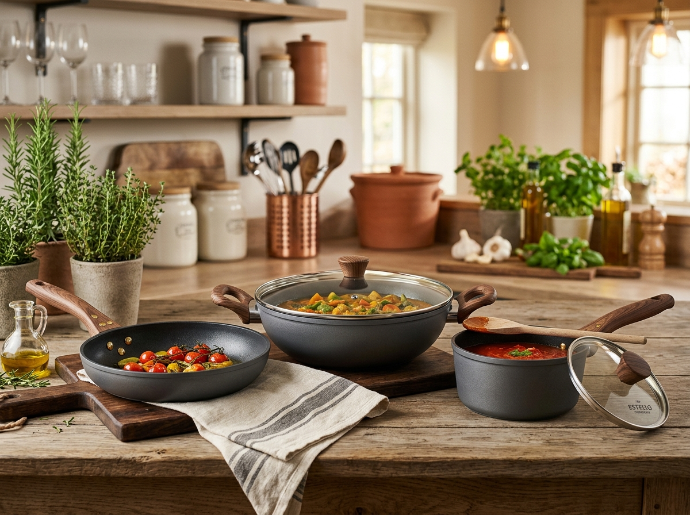

Safety-minded
Thoughtful construction and everyday usability stay at the heart of our range.
Premium kitchenware with a warm, timeless design language—made for everyday meals, family rituals and kitchens that feel like home.

Explore pressure cookers, stoves, cookware and everyday essentials. For pricing and availability, enquire directly with our team.

Utsav Surya is built around a simple idea: kitchenware should work hard without looking ordinary. We focus on practical forms, dependable materials and a refined finish that belongs in the modern Indian home.
Good kitchenware should feel considered from the first touch to the hundredth meal.
Thoughtful construction and everyday usability stay at the heart of our range.
Products chosen for the rhythms of Indian cooking, from quick breakfasts to family dinners.
No confusing price cards. Tell us what you need and our team will discuss availability and pricing.
Whether you're upgrading one pan or sourcing for a store, we'll help you choose the right products for your needs.
Looking for a dependable kitchenware range? Share your location, store details and categories of interest. We'll discuss the right partnership and commercial terms with you.
For product availability, specifications or pricing, contact our team directly.
Send us an enquiry on WhatsApp, call us, or use the enquiry form. Our team will discuss the current price and availability with you.
Yes. We welcome retailer, dealer and distributor enquiries. Share your business details and we'll take it from there.
Absolutely. Use the product card's enquiry button and mention the product you're interested in.
Utsav Surya is based in Motihari, Bihar and serves customers and business partners across India.
Message us for product details, availability and pricing. No pressure—just a conversation.